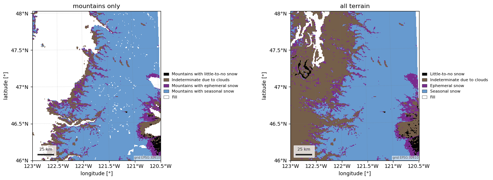
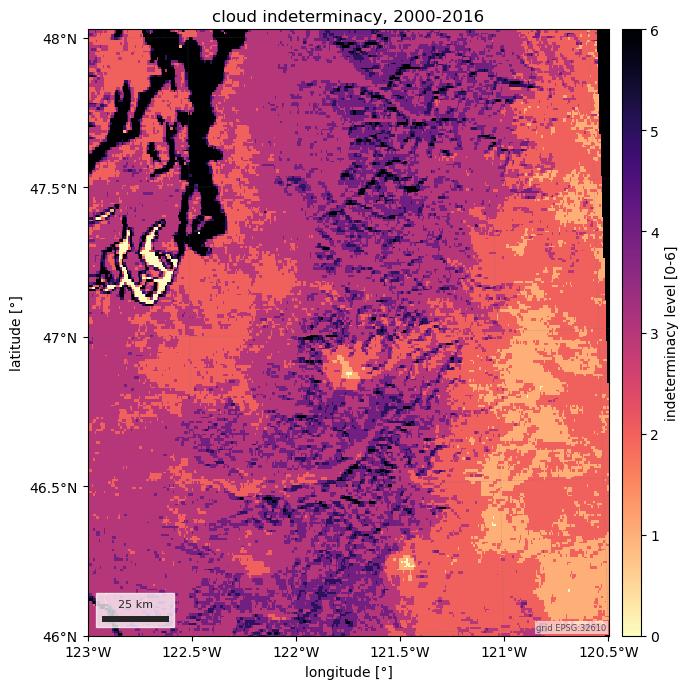

Output from an earlier build
This example could not run in the build of 2026-10-16, so the code, printed output, and figures below are from the last build in which it ran, on 2026-10-14; the download buttons give the current script. The error was: requests.exceptions.ReadTimeout: HTTPSConnectionPool(host='zenodo.org', port=443): Read timed out. (read timeout=30)
Note
Go to the end to download the full example code.
Mountain snow mask (Wrzesien et al.)#
Wrzesien et al. (2019) classified the MODIS MOD10A2 snow-cover record for
2000-2016 at 30 arcsec into little-to-no, ephemeral and seasonal snow, and
intersected it with a mountain definition based on GTOPO30 relief. The result
is three layers: mountain_snow (the classes over mountains only),
snow (the same classes over all terrain) and clouds (how often the
composite was indeterminate because of cloud).
One route, source="zenodo", with no credentials: one zipped GeoTIFF per
layer, fetched once into the easysnowdata cache.
The figures show the mountain and all-terrain layers side by side across the central Cascades and Puget lowlands, and the cloud-indeterminacy layer.
import matplotlib.pyplot as plt
import numpy as np
import easysnowdata as esd
aoi = (-123.0, 46.0, -120.5, 48.0) # the central Cascades, Puget Sound to Yakima
box = esd.parse_aoi(aoi)
grid = box.to_geobox(crs="utm", resolution=500) # every map below is drawn on this grid
print(box)
print(grid)
AOI(bounds=(-123.0000, 46.0000, -120.5000, 48.0000), clip=True)
GeoBox((451, 388), Affine(500.0, 0.0, 500000.0,
0.0, -500.0, 5319500.0), CRS('EPSG:32610'))
Where the product comes from, and what the route asks for.
for src in esd.catalog.get("mountain-snow-mask").sources:
print(f"{src.id:22} {src.title:45} {', '.join(src.requires) or 'no account'}")
zenodo Zenodo zip no account
The two class layers. In the mountain layer, Fill (255) is every pixel
that is not mountain by the relief criterion, so the lowlands drop out and
the mask says where seasonal snow is also mountain snow. The all-terrain
layer keeps them and classifies the Puget lowlands as ephemeral.
The layers are geographic; the box is loaded with a 2 km margin and each
is drawn on the AOI’s UTM grid, resampled nearest so the classes survive.
mountain_da = esd.snow.mountain_snow_mask.load(box.buffer(2000), layer="mountain_snow")
terrain_da = esd.snow.mountain_snow_mask.load(box.buffer(2000), layer="snow")
print(mountain_da.attrs["flag_meanings"])
fig, axes = plt.subplots(1, 2, figsize=(14, 5))
esd.plotting.categorical(
mountain_da.odc.reproject(grid, resampling="nearest"),
ax=axes[0],
title="mountains only",
)
esd.plotting.categorical(
terrain_da.odc.reproject(grid, resampling="nearest"),
ax=axes[1],
title="all terrain",
)
fig.tight_layout()
values, counts = np.unique(mountain_da.values, return_counts=True)
for value, count in zip(values, counts):
print(f"class {value:3d}: {count:6d} pixels")

0%| | 0.00/13.7M [00:00<?, ?B/s]
0%| | 15.4k/13.7M [00:00<02:28, 91.7kB/s]
0%| | 43.0k/13.7M [00:00<01:33, 146kB/s]
1%|▎ | 115k/13.7M [00:00<00:45, 299kB/s]
1%|▌ | 187k/13.7M [00:00<00:35, 376kB/s]
2%|▊ | 266k/13.7M [00:00<00:30, 435kB/s]
2%|▉ | 329k/13.7M [00:00<00:30, 431kB/s]
3%|█ | 390k/13.7M [00:01<00:31, 419kB/s]
3%|█▎ | 457k/13.7M [00:01<00:30, 429kB/s]
4%|█▋ | 571k/13.7M [00:01<00:24, 535kB/s]
5%|█▊ | 637k/13.7M [00:01<00:26, 488kB/s]
5%|██ | 701k/13.7M [00:01<00:27, 472kB/s]
6%|██▏ | 767k/13.7M [00:01<00:27, 465kB/s]
6%|██▍ | 849k/13.7M [00:01<00:26, 493kB/s]
7%|██▊ | 1.01M/13.7M [00:02<00:18, 678kB/s]
8%|███ | 1.11M/13.7M [00:02<00:18, 676kB/s]
9%|███▍ | 1.24M/13.7M [00:02<00:16, 732kB/s]
10%|███▋ | 1.34M/13.7M [00:02<00:17, 712kB/s]
10%|███▉ | 1.41M/13.7M [00:02<00:18, 645kB/s]
11%|████▎ | 1.57M/13.7M [00:02<00:15, 764kB/s]
12%|████▋ | 1.67M/13.7M [00:02<00:16, 735kB/s]
13%|████▊ | 1.75M/13.7M [00:03<00:17, 681kB/s]
14%|█████▏ | 1.88M/13.7M [00:03<00:16, 735kB/s]
15%|█████▌ | 1.99M/13.7M [00:03<00:15, 746kB/s]
15%|█████▊ | 2.08M/13.7M [00:03<00:16, 684kB/s]
16%|██████ | 2.17M/13.7M [00:03<00:16, 678kB/s]
17%|██████▎ | 2.27M/13.7M [00:03<00:16, 673kB/s]
18%|██████▋ | 2.42M/13.7M [00:04<00:14, 768kB/s]
18%|██████▉ | 2.52M/13.7M [00:04<00:15, 737kB/s]
19%|███████▎ | 2.61M/13.7M [00:04<00:16, 654kB/s]
20%|███████▌ | 2.71M/13.7M [00:04<00:17, 637kB/s]
21%|███████▊ | 2.81M/13.7M [00:04<00:17, 638kB/s]
21%|███████▉ | 2.88M/13.7M [00:04<00:18, 581kB/s]
22%|████████▎ | 2.97M/13.7M [00:04<00:17, 606kB/s]
22%|████████▍ | 3.06M/13.7M [00:05<00:18, 569kB/s]
23%|████████▊ | 3.15M/13.7M [00:05<00:17, 590kB/s]
24%|████████▉ | 3.22M/13.7M [00:05<00:19, 549kB/s]
24%|█████████▎ | 3.34M/13.7M [00:05<00:16, 630kB/s]
25%|█████████▌ | 3.44M/13.7M [00:05<00:16, 632kB/s]
26%|█████████▊ | 3.54M/13.7M [00:05<00:16, 630kB/s]
26%|██████████ | 3.62M/13.7M [00:06<00:16, 609kB/s]
27%|██████████▍ | 3.73M/13.7M [00:06<00:15, 660kB/s]
29%|██████████▉ | 3.91M/13.7M [00:06<00:11, 828kB/s]
30%|███████████▎ | 4.06M/13.7M [00:06<00:10, 878kB/s]
30%|███████████▌ | 4.16M/13.7M [00:06<00:11, 810kB/s]
31%|███████████▊ | 4.26M/13.7M [00:06<00:12, 755kB/s]
32%|████████████ | 4.36M/13.7M [00:06<00:12, 725kB/s]
32%|████████████▎ | 4.43M/13.7M [00:07<00:14, 646kB/s]
33%|████████████▌ | 4.52M/13.7M [00:07<00:14, 632kB/s]
34%|████████████▉ | 4.65M/13.7M [00:07<00:12, 706kB/s]
35%|█████████████▏ | 4.75M/13.7M [00:07<00:12, 692kB/s]
36%|█████████████▌ | 4.89M/13.7M [00:07<00:13, 673kB/s]
37%|█████████████▉ | 4.99M/13.7M [00:07<00:13, 656kB/s]
37%|██████████████▏ | 5.09M/13.7M [00:08<00:13, 657kB/s]
38%|██████████████▍ | 5.17M/13.7M [00:08<00:13, 630kB/s]
39%|██████████████▋ | 5.27M/13.7M [00:08<00:13, 642kB/s]
39%|██████████████▊ | 5.34M/13.7M [00:08<00:14, 586kB/s]
40%|███████████████ | 5.40M/13.7M [00:08<00:15, 546kB/s]
40%|███████████████▍ | 5.53M/13.7M [00:08<00:12, 644kB/s]
42%|███████████████▉ | 5.71M/13.7M [00:08<00:09, 814kB/s]
43%|████████████████▏ | 5.83M/13.7M [00:09<00:09, 805kB/s]
44%|████████████████▌ | 5.96M/13.7M [00:09<00:09, 831kB/s]
45%|█████████████████ | 6.15M/13.7M [00:09<00:07, 983kB/s]
46%|█████████████████▏ | 6.33M/13.7M [00:09<00:07, 1.03MB/s]
47%|█████████████████▉ | 6.44M/13.7M [00:09<00:07, 910kB/s]
48%|██████████████████▏ | 6.53M/13.7M [00:09<00:08, 830kB/s]
49%|██████████████████▍ | 6.64M/13.7M [00:10<00:08, 812kB/s]
49%|██████████████████▋ | 6.74M/13.7M [00:10<00:09, 769kB/s]
50%|███████████████████▏ | 6.89M/13.7M [00:10<00:08, 838kB/s]
51%|███████████████████▍ | 6.99M/13.7M [00:10<00:08, 788kB/s]
52%|███████████████████▋ | 7.10M/13.7M [00:10<00:08, 783kB/s]
53%|████████████████████ | 7.20M/13.7M [00:10<00:08, 748kB/s]
54%|████████████████████▍ | 7.33M/13.7M [00:10<00:08, 790kB/s]
55%|████████████████████▊ | 7.49M/13.7M [00:11<00:07, 841kB/s]
56%|█████████████████████ | 7.59M/13.7M [00:11<00:07, 784kB/s]
56%|█████████████████████▍ | 7.69M/13.7M [00:11<00:07, 750kB/s]
57%|█████████████████████▋ | 7.79M/13.7M [00:11<00:08, 726kB/s]
58%|█████████████████████▉ | 7.89M/13.7M [00:11<00:08, 709kB/s]
58%|██████████████████████▏ | 7.99M/13.7M [00:11<00:08, 697kB/s]
60%|██████████████████████▌ | 8.13M/13.7M [00:11<00:07, 788kB/s]
61%|███████████████████████ | 8.28M/13.7M [00:12<00:06, 835kB/s]
61%|███████████████████████▎ | 8.38M/13.7M [00:12<00:06, 781kB/s]
62%|███████████████████████▌ | 8.49M/13.7M [00:12<00:06, 779kB/s]
63%|███████████████████████▉ | 8.59M/13.7M [00:12<00:06, 746kB/s]
65%|████████████████████████▌ | 8.82M/13.7M [00:12<00:04, 984kB/s]
65%|████████████████████████▊ | 8.93M/13.7M [00:12<00:05, 925kB/s]
66%|█████████████████████████▏ | 9.06M/13.7M [00:13<00:05, 915kB/s]
68%|█████████████████████████ | 9.24M/13.7M [00:13<00:04, 1.00MB/s]
68%|█████████████████████████▉ | 9.35M/13.7M [00:13<00:05, 783kB/s]
69%|██████████████████████████▏ | 9.44M/13.7M [00:13<00:05, 735kB/s]
70%|██████████████████████████▍ | 9.52M/13.7M [00:13<00:06, 679kB/s]
71%|██████████████████████████▊ | 9.65M/13.7M [00:13<00:05, 748kB/s]
71%|███████████████████████████ | 9.75M/13.7M [00:13<00:05, 724kB/s]
72%|███████████████████████████▍ | 9.85M/13.7M [00:14<00:05, 690kB/s]
73%|███████████████████████████▋ | 9.95M/13.7M [00:14<00:05, 676kB/s]
74%|███████████████████████████▉ | 10.1M/13.7M [00:14<00:05, 705kB/s]
74%|████████████████████████████▏ | 10.2M/13.7M [00:14<00:05, 643kB/s]
75%|████████████████████████████▌ | 10.3M/13.7M [00:14<00:05, 643kB/s]
76%|████████████████████████████▊ | 10.4M/13.7M [00:14<00:05, 641kB/s]
77%|█████████████████████████████ | 10.5M/13.7M [00:15<00:04, 681kB/s]
78%|█████████████████████████████▍ | 10.6M/13.7M [00:15<00:04, 742kB/s]
79%|██████████████████████████████ | 10.8M/13.7M [00:15<00:03, 938kB/s]
80%|██████████████████████████████▎ | 10.9M/13.7M [00:15<00:03, 841kB/s]
81%|██████████████████████████████▌ | 11.0M/13.7M [00:15<00:03, 696kB/s]
81%|██████████████████████████████▉ | 11.1M/13.7M [00:15<00:03, 681kB/s]
82%|███████████████████████████████▎ | 11.2M/13.7M [00:16<00:03, 731kB/s]
83%|███████████████████████████████▌ | 11.3M/13.7M [00:16<00:03, 714kB/s]
84%|███████████████████████████████▊ | 11.5M/13.7M [00:16<00:03, 732kB/s]
85%|████████████████████████████████ | 11.5M/13.7M [00:16<00:02, 714kB/s]
86%|████████████████████████████████▌ | 11.7M/13.7M [00:16<00:02, 830kB/s]
86%|████████████████████████████████▊ | 11.8M/13.7M [00:16<00:02, 758kB/s]
87%|█████████████████████████████████ | 11.9M/13.7M [00:16<00:02, 729kB/s]
88%|█████████████████████████████████▎ | 12.0M/13.7M [00:17<00:02, 679kB/s]
89%|█████████████████████████████████▋ | 12.1M/13.7M [00:17<00:02, 741kB/s]
90%|██████████████████████████████████ | 12.2M/13.7M [00:17<00:01, 751kB/s]
90%|██████████████████████████████████▎ | 12.3M/13.7M [00:17<00:01, 728kB/s]
92%|██████████████████████████████████▊ | 12.5M/13.7M [00:17<00:01, 871kB/s]
93%|███████████████████████████████████▎ | 12.7M/13.7M [00:17<00:01, 944kB/s]
94%|███████████████████████████████████▋ | 12.8M/13.7M [00:18<00:00, 962kB/s]
95%|███████████████████████████████████▉ | 12.9M/13.7M [00:18<00:00, 870kB/s]
95%|████████████████████████████████████▏ | 13.0M/13.7M [00:18<00:00, 790kB/s]
96%|████████████████████████████████████▌ | 13.2M/13.7M [00:18<00:00, 842kB/s]
97%|████████████████████████████████████▉ | 13.3M/13.7M [00:18<00:00, 826kB/s]
99%|█████████████████████████████████████▍| 13.5M/13.7M [00:18<00:00, 977kB/s]
99%|█████████████████████████████████████▋| 13.6M/13.7M [00:18<00:00, 885kB/s]
100%|█████████████████████████████████████▉| 13.7M/13.7M [00:19<00:00, 819kB/s]
0%| | 0.00/13.7M [00:00<?, ?B/s]
100%|█████████████████████████████████████| 13.7M/13.7M [00:00<00:00, 74.1GB/s]
0%| | 0.00/13.9M [00:00<?, ?B/s]
0%| | 1.02k/13.9M [00:00<32:27, 7.16kB/s]
0%| | 32.8k/13.9M [00:00<01:44, 133kB/s]
1%|▎ | 98.3k/13.9M [00:00<00:49, 281kB/s]
1%|▌ | 180k/13.9M [00:00<00:34, 395kB/s]
2%|▋ | 246k/13.9M [00:00<00:33, 415kB/s]
2%|▊ | 311k/13.9M [00:00<00:32, 421kB/s]
3%|█ | 377k/13.9M [00:01<00:31, 424kB/s]
3%|█▏ | 442k/13.9M [00:01<00:31, 429kB/s]
4%|█▍ | 508k/13.9M [00:01<00:30, 434kB/s]
4%|█▌ | 572k/13.9M [00:01<00:30, 436kB/s]
5%|█▊ | 638k/13.9M [00:01<00:30, 441kB/s]
5%|█▉ | 703k/13.9M [00:01<00:29, 445kB/s]
6%|██▏ | 785k/13.9M [00:01<00:27, 481kB/s]
6%|██▍ | 867k/13.9M [00:02<00:26, 491kB/s]
7%|██▌ | 933k/13.9M [00:02<00:27, 469kB/s]
7%|██▊ | 998k/13.9M [00:02<00:28, 450kB/s]
8%|██▉ | 1.06M/13.9M [00:02<00:28, 451kB/s]
8%|███▏ | 1.18M/13.9M [00:02<00:26, 489kB/s]
9%|███▍ | 1.24M/13.9M [00:02<00:26, 479kB/s]
10%|███▋ | 1.34M/13.9M [00:03<00:23, 534kB/s]
10%|███▉ | 1.44M/13.9M [00:03<00:22, 562kB/s]
11%|████ | 1.51M/13.9M [00:03<00:25, 481kB/s]
11%|████▎ | 1.57M/13.9M [00:03<00:26, 472kB/s]
12%|████▌ | 1.67M/13.9M [00:03<00:24, 507kB/s]
13%|████▊ | 1.77M/13.9M [00:03<00:21, 554kB/s]
13%|█████ | 1.86M/13.9M [00:03<00:20, 588kB/s]
14%|█████▍ | 1.98M/13.9M [00:04<00:18, 638kB/s]
15%|█████▌ | 2.04M/13.9M [00:04<00:20, 574kB/s]
15%|█████▊ | 2.11M/13.9M [00:04<00:22, 536kB/s]
16%|██████▏ | 2.26M/13.9M [00:04<00:17, 652kB/s]
17%|██████▎ | 2.32M/13.9M [00:04<00:19, 589kB/s]
18%|██████▋ | 2.47M/13.9M [00:04<00:16, 693kB/s]
18%|██████▉ | 2.55M/13.9M [00:05<00:17, 653kB/s]
19%|███████▏ | 2.62M/13.9M [00:05<00:19, 594kB/s]
19%|███████▍ | 2.71M/13.9M [00:05<00:18, 616kB/s]
20%|███████▋ | 2.83M/13.9M [00:05<00:16, 678kB/s]
21%|███████▉ | 2.92M/13.9M [00:05<00:17, 642kB/s]
21%|████████▏ | 2.98M/13.9M [00:05<00:18, 583kB/s]
22%|████████▎ | 3.06M/13.9M [00:05<00:18, 576kB/s]
23%|████████▌ | 3.16M/13.9M [00:06<00:17, 603kB/s]
23%|████████▉ | 3.26M/13.9M [00:06<00:17, 625kB/s]
24%|█████████▏ | 3.37M/13.9M [00:06<00:15, 670kB/s]
25%|█████████▌ | 3.49M/13.9M [00:06<00:14, 704kB/s]
26%|█████████▊ | 3.62M/13.9M [00:06<00:13, 764kB/s]
27%|██████████ | 3.70M/13.9M [00:06<00:14, 687kB/s]
27%|██████████▎ | 3.77M/13.9M [00:06<00:16, 625kB/s]
27%|██████████▍ | 3.83M/13.9M [00:07<00:17, 576kB/s]
28%|██████████▋ | 3.93M/13.9M [00:07<00:16, 599kB/s]
29%|██████████▉ | 4.00M/13.9M [00:07<00:17, 554kB/s]
29%|███████████ | 4.06M/13.9M [00:07<00:18, 523kB/s]
30%|███████████▏ | 4.13M/13.9M [00:07<00:20, 489kB/s]
30%|███████████▍ | 4.19M/13.9M [00:07<00:20, 477kB/s]
31%|███████████▌ | 4.26M/13.9M [00:08<00:21, 452kB/s]
31%|███████████▊ | 4.32M/13.9M [00:08<00:21, 452kB/s]
32%|████████████ | 4.41M/13.9M [00:08<00:21, 451kB/s]
32%|████████████▏ | 4.47M/13.9M [00:08<00:21, 449kB/s]
33%|████████████▍ | 4.55M/13.9M [00:08<00:19, 482kB/s]
33%|████████████▋ | 4.63M/13.9M [00:08<00:18, 505kB/s]
34%|████████████▊ | 4.70M/13.9M [00:08<00:18, 490kB/s]
34%|████████████▉ | 4.76M/13.9M [00:09<00:19, 477kB/s]
35%|█████████████▏ | 4.83M/13.9M [00:09<00:19, 469kB/s]
35%|█████████████▎ | 4.90M/13.9M [00:09<00:20, 450kB/s]
36%|█████████████▌ | 4.99M/13.9M [00:09<00:16, 550kB/s]
37%|██████████████ | 5.14M/13.9M [00:09<00:11, 764kB/s]
39%|██████████████▎ | 5.37M/13.9M [00:09<00:08, 1.07MB/s]
41%|██████████████▉ | 5.65M/13.9M [00:09<00:07, 1.12MB/s]
42%|███████████████▋ | 5.90M/13.9M [00:10<00:06, 1.26MB/s]
44%|████████████████▎ | 6.13M/13.9M [00:10<00:05, 1.33MB/s]
46%|████████████████▉ | 6.37M/13.9M [00:10<00:05, 1.43MB/s]
47%|█████████████████▍ | 6.57M/13.9M [00:10<00:05, 1.39MB/s]
49%|██████████████████ | 6.81M/13.9M [00:10<00:04, 1.44MB/s]
50%|██████████████████▌ | 6.99M/13.9M [00:10<00:05, 1.38MB/s]
53%|███████████████████▋ | 7.41M/13.9M [00:10<00:03, 1.82MB/s]
55%|████████████████████▍ | 7.71M/13.9M [00:11<00:03, 1.88MB/s]
57%|█████████████████████ | 7.94M/13.9M [00:11<00:03, 1.79MB/s]
58%|█████████████████████▌ | 8.13M/13.9M [00:11<00:03, 1.66MB/s]
60%|██████████████████████▏ | 8.36M/13.9M [00:11<00:03, 1.64MB/s]
61%|██████████████████████▋ | 8.56M/13.9M [00:11<00:03, 1.54MB/s]
63%|███████████████████████▎ | 8.79M/13.9M [00:11<00:03, 1.46MB/s]
64%|███████████████████████▋ | 8.93M/13.9M [00:12<00:03, 1.36MB/s]
65%|████████████████████████▏ | 9.10M/13.9M [00:12<00:03, 1.29MB/s]
67%|████████████████████████▋ | 9.31M/13.9M [00:12<00:03, 1.34MB/s]
68%|█████████████████████████▎ | 9.54M/13.9M [00:12<00:03, 1.41MB/s]
70%|█████████████████████████▉ | 9.78M/13.9M [00:12<00:02, 1.49MB/s]
72%|██████████████████████████▌ | 10.0M/13.9M [00:12<00:02, 1.44MB/s]
73%|███████████████████████████▏ | 10.2M/13.9M [00:12<00:02, 1.43MB/s]
75%|███████████████████████████▊ | 10.5M/13.9M [00:13<00:02, 1.49MB/s]
76%|████████████████████████████▎ | 10.7M/13.9M [00:13<00:02, 1.36MB/s]
78%|████████████████████████████▉ | 10.9M/13.9M [00:13<00:02, 1.32MB/s]
80%|█████████████████████████████▌ | 11.1M/13.9M [00:13<00:02, 1.41MB/s]
82%|██████████████████████████████▏ | 11.4M/13.9M [00:13<00:01, 1.48MB/s]
83%|██████████████████████████████▊ | 11.6M/13.9M [00:13<00:01, 1.49MB/s]
85%|███████████████████████████████▌ | 11.9M/13.9M [00:14<00:01, 1.39MB/s]
86%|███████████████████████████████▉ | 12.0M/13.9M [00:14<00:01, 1.30MB/s]
88%|████████████████████████████████▋ | 12.3M/13.9M [00:14<00:01, 1.41MB/s]
90%|█████████████████████████████████▏ | 12.5M/13.9M [00:14<00:01, 1.39MB/s]
91%|█████████████████████████████████▊ | 12.7M/13.9M [00:14<00:00, 1.47MB/s]
93%|██████████████████████████████████▍ | 13.0M/13.9M [00:14<00:00, 1.41MB/s]
95%|███████████████████████████████████▏ | 13.2M/13.9M [00:15<00:00, 1.42MB/s]
96%|███████████████████████████████████▌ | 13.4M/13.9M [00:15<00:00, 1.34MB/s]
99%|████████████████████████████████████▌| 13.8M/13.9M [00:15<00:00, 1.68MB/s]
0%| | 0.00/13.9M [00:00<?, ?B/s]
100%|█████████████████████████████████████| 13.9M/13.9M [00:00<00:00, 87.7GB/s]
Mountains_with_little-to-no_snow Indeterminate_due_to_clouds Mountains_with_ephemeral_snow Mountains_with_seasonal_snow Fill
/home/runner/work/easysnowdata/easysnowdata/.pixi/envs/docs/lib/python3.13/site-packages/rasterio/warp.py:385: NotGeoreferencedWarning: Dataset has no geotransform, gcps, or rpcs. The identity matrix will be returned.
dest = _reproject(
class 0: 572 pixels
class 1: 5971 pixels
class 2: 5243 pixels
class 3: 38444 pixels
class 255: 25538 pixels
The clouds layer is the indeterminacy level (0-6) behind the classes; the upstream record does not define the scale further, so it is kept as an integer without a class table. Rainier’s high terrain is where the MOD10A2 composites were most often indeterminate.
clouds_da = esd.snow.mountain_snow_mask.load(box.buffer(2000), layer="clouds")
ax = esd.plotting.map(
clouds_da.odc.reproject(grid, resampling="nearest"),
cmap="magma_r",
vmin=0,
vmax=6,
title="cloud indeterminacy, 2000-2016",
cbar_label="indeterminacy level [0-6]",
)
ax.figure.tight_layout()

0%| | 0.00/25.9M [00:00<?, ?B/s]
0%| | 1.02k/25.9M [00:00<1:00:16, 7.15kB/s]
0%| | 32.8k/25.9M [00:00<03:14, 133kB/s]
0%| | 65.5k/25.9M [00:00<03:07, 138kB/s]
0%|▏ | 98.3k/25.9M [00:00<02:27, 174kB/s]
1%|▏ | 131k/25.9M [00:01<04:52, 87.9kB/s]
1%|▏ | 164k/25.9M [00:01<04:15, 101kB/s]
1%|▎ | 229k/25.9M [00:01<02:52, 149kB/s]
1%|▍ | 262k/25.9M [00:01<02:40, 159kB/s]
1%|▍ | 295k/25.9M [00:02<02:20, 182kB/s]
1%|▍ | 328k/25.9M [00:02<02:09, 197kB/s]
2%|▌ | 393k/25.9M [00:02<01:41, 251kB/s]
2%|▋ | 459k/25.9M [00:02<01:25, 298kB/s]
2%|▊ | 524k/25.9M [00:03<02:45, 153kB/s]
2%|▉ | 589k/25.9M [00:03<02:14, 188kB/s]
2%|▉ | 622k/25.9M [00:03<02:18, 183kB/s]
3%|▉ | 654k/25.9M [00:03<02:15, 186kB/s]
3%|█ | 687k/25.9M [00:04<02:20, 179kB/s]
3%|█ | 720k/25.9M [00:04<02:19, 180kB/s]
3%|█▏ | 753k/25.9M [00:04<02:20, 179kB/s]
3%|█▏ | 785k/25.9M [00:04<02:28, 169kB/s]
3%|█▏ | 818k/25.9M [00:04<02:54, 143kB/s]
3%|█▎ | 851k/25.9M [00:05<02:51, 146kB/s]
3%|█▎ | 884k/25.9M [00:05<02:47, 149kB/s]
4%|█▍ | 916k/25.9M [00:05<02:34, 161kB/s]
4%|█▍ | 949k/25.9M [00:06<03:46, 110kB/s]
4%|█▍ | 982k/25.9M [00:07<06:45, 61.3kB/s]
4%|█▍ | 1.01M/25.9M [00:07<05:19, 77.8kB/s]
4%|█▌ | 1.08M/25.9M [00:07<03:20, 123kB/s]
4%|█▋ | 1.11M/25.9M [00:07<02:50, 145kB/s]
5%|█▋ | 1.18M/25.9M [00:07<02:04, 198kB/s]
5%|█▋ | 1.21M/25.9M [00:08<04:20, 94.5kB/s]
5%|█▊ | 1.23M/25.9M [00:08<04:33, 90.1kB/s]
5%|█▊ | 1.26M/25.9M [00:09<04:01, 102kB/s]
5%|█▉ | 1.33M/25.9M [00:09<02:40, 153kB/s]
5%|██ | 1.39M/25.9M [00:09<02:24, 170kB/s]
6%|██ | 1.43M/25.9M [00:09<02:08, 190kB/s]
6%|██▏ | 1.49M/25.9M [00:09<01:48, 224kB/s]
6%|██▎ | 1.56M/25.9M [00:10<01:30, 268kB/s]
6%|██▍ | 1.62M/25.9M [00:10<02:02, 197kB/s]
7%|██▍ | 1.68M/25.9M [00:10<02:00, 201kB/s]
7%|██▌ | 1.72M/25.9M [00:11<02:13, 181kB/s]
7%|██▌ | 1.75M/25.9M [00:11<02:04, 194kB/s]
7%|██▌ | 1.78M/25.9M [00:11<01:58, 204kB/s]
7%|██▋ | 1.82M/25.9M [00:11<02:09, 186kB/s]
7%|██▋ | 1.85M/25.9M [00:11<02:01, 198kB/s]
7%|██▊ | 1.88M/25.9M [00:11<01:53, 212kB/s]
7%|██▊ | 1.91M/25.9M [00:12<02:10, 184kB/s]
8%|██▉ | 1.98M/25.9M [00:12<01:38, 243kB/s]
8%|███ | 2.04M/25.9M [00:12<01:22, 288kB/s]
8%|███ | 2.11M/25.9M [00:12<01:14, 319kB/s]
8%|███▏ | 2.14M/25.9M [00:13<02:07, 186kB/s]
9%|███▏ | 2.21M/25.9M [00:13<01:42, 231kB/s]
9%|███▎ | 2.27M/25.9M [00:13<01:28, 268kB/s]
9%|███▍ | 2.34M/25.9M [00:13<01:17, 305kB/s]
9%|███▌ | 2.40M/25.9M [00:13<01:10, 334kB/s]
10%|███▋ | 2.47M/25.9M [00:13<01:11, 325kB/s]
10%|███▋ | 2.53M/25.9M [00:14<01:05, 356kB/s]
10%|███▊ | 2.60M/25.9M [00:14<01:03, 369kB/s]
10%|███▉ | 2.66M/25.9M [00:14<01:02, 372kB/s]
11%|████ | 2.73M/25.9M [00:14<01:02, 372kB/s]
11%|████ | 2.79M/25.9M [00:14<01:00, 381kB/s]
11%|████▏ | 2.84M/25.9M [00:15<01:51, 206kB/s]
11%|████▏ | 2.88M/25.9M [00:15<01:49, 209kB/s]
11%|████▎ | 2.95M/25.9M [00:15<01:36, 237kB/s]
12%|████▍ | 2.98M/25.9M [00:15<01:29, 255kB/s]
12%|████▍ | 3.01M/25.9M [00:15<01:25, 266kB/s]
12%|████▍ | 3.05M/25.9M [00:16<01:23, 272kB/s]
12%|████▌ | 3.11M/25.9M [00:16<01:07, 336kB/s]
12%|████▋ | 3.15M/25.9M [00:16<01:15, 300kB/s]
12%|████▋ | 3.18M/25.9M [00:16<02:42, 139kB/s]
12%|████▋ | 3.21M/25.9M [00:17<02:27, 154kB/s]
13%|████▊ | 3.24M/25.9M [00:17<02:09, 174kB/s]
13%|████▊ | 3.28M/25.9M [00:17<01:55, 196kB/s]
13%|████▊ | 3.31M/25.9M [00:17<01:44, 215kB/s]
13%|████▉ | 3.37M/25.9M [00:17<01:24, 266kB/s]
14%|█████▏ | 3.51M/25.9M [00:17<00:51, 433kB/s]
14%|█████▏ | 3.55M/25.9M [00:17<00:59, 378kB/s]
14%|█████▎ | 3.59M/25.9M [00:18<01:04, 344kB/s]
14%|█████▎ | 3.63M/25.9M [00:18<01:22, 269kB/s]
14%|█████▍ | 3.66M/25.9M [00:18<01:33, 238kB/s]
14%|█████▍ | 3.69M/25.9M [00:18<01:47, 206kB/s]
14%|█████▍ | 3.71M/25.9M [00:19<02:46, 133kB/s]
14%|█████▍ | 3.73M/25.9M [00:19<03:02, 121kB/s]
15%|█████▌ | 3.80M/25.9M [00:19<02:11, 167kB/s]
15%|█████▋ | 3.83M/25.9M [00:19<02:00, 183kB/s]
15%|█████▋ | 3.90M/25.9M [00:20<01:48, 202kB/s]
15%|█████▊ | 3.93M/25.9M [00:20<01:40, 219kB/s]
15%|█████▊ | 3.96M/25.9M [00:20<01:32, 237kB/s]
15%|█████▊ | 4.00M/25.9M [00:20<02:20, 156kB/s]
16%|█████▉ | 4.03M/25.9M [00:20<02:26, 149kB/s]
16%|█████▉ | 4.06M/25.9M [00:21<02:19, 156kB/s]
16%|██████ | 4.09M/25.9M [00:21<02:07, 170kB/s]
16%|██████ | 4.16M/25.9M [00:21<01:43, 210kB/s]
16%|██████▏ | 4.19M/25.9M [00:21<01:47, 201kB/s]
16%|██████▏ | 4.23M/25.9M [00:21<02:02, 176kB/s]
16%|██████▎ | 4.26M/25.9M [00:22<01:54, 189kB/s]
17%|██████▎ | 4.32M/25.9M [00:22<01:24, 256kB/s]
17%|██████▍ | 4.37M/25.9M [00:22<01:52, 191kB/s]
17%|██████▍ | 4.42M/25.9M [00:23<02:22, 150kB/s]
17%|██████▌ | 4.45M/25.9M [00:23<02:16, 157kB/s]
17%|██████▋ | 4.52M/25.9M [00:23<01:44, 203kB/s]
18%|██████▋ | 4.55M/25.9M [00:23<01:49, 194kB/s]
18%|██████▋ | 4.58M/25.9M [00:23<02:06, 169kB/s]
18%|██████▊ | 4.62M/25.9M [00:24<01:55, 184kB/s]
18%|██████▊ | 4.65M/25.9M [00:24<01:51, 190kB/s]
18%|██████▉ | 4.68M/25.9M [00:24<01:55, 184kB/s]
18%|██████▉ | 4.72M/25.9M [00:24<02:00, 175kB/s]
18%|██████▉ | 4.75M/25.9M [00:24<02:00, 175kB/s]
18%|███████ | 4.78M/25.9M [00:24<02:04, 169kB/s]
19%|███████ | 4.81M/25.9M [00:25<01:57, 179kB/s]
19%|███████ | 4.85M/25.9M [00:25<03:25, 102kB/s]
19%|███████▏ | 4.88M/25.9M [00:25<02:51, 122kB/s]
19%|███████▏ | 4.91M/25.9M [00:26<02:31, 138kB/s]
19%|███████▎ | 4.94M/25.9M [00:26<02:58, 117kB/s]
19%|███████▎ | 4.99M/25.9M [00:26<02:12, 158kB/s]
20%|███████▍ | 5.04M/25.9M [00:26<01:49, 190kB/s]
20%|███████▍ | 5.07M/25.9M [00:27<02:10, 159kB/s]
20%|███████▌ | 5.14M/25.9M [00:27<01:42, 202kB/s]
20%|███████▌ | 5.17M/25.9M [00:27<01:41, 204kB/s]
20%|███████▋ | 5.21M/25.9M [00:27<01:49, 189kB/s]
20%|███████▋ | 5.24M/25.9M [00:27<02:03, 166kB/s]
20%|███████▋ | 5.27M/25.9M [00:28<01:52, 183kB/s]
21%|███████▊ | 5.30M/25.9M [00:28<01:38, 209kB/s]
21%|███████▊ | 5.34M/25.9M [00:28<01:28, 231kB/s]
21%|███████▉ | 5.40M/25.9M [00:28<02:30, 136kB/s]
21%|███████▊ | 5.43M/25.9M [00:30<06:38, 51.2kB/s]
21%|███████▊ | 5.47M/25.9M [00:30<05:17, 64.1kB/s]
21%|███████▉ | 5.53M/25.9M [00:31<03:37, 93.3kB/s]
22%|████████▏ | 5.57M/25.9M [00:31<03:21, 101kB/s]
22%|████████▏ | 5.60M/25.9M [00:31<03:20, 101kB/s]
22%|████████▎ | 5.63M/25.9M [00:31<02:52, 117kB/s]
22%|████████▎ | 5.66M/25.9M [00:32<02:30, 134kB/s]
22%|████████▎ | 5.70M/25.9M [00:32<02:27, 137kB/s]
22%|████████▍ | 5.73M/25.9M [00:32<02:19, 144kB/s]
22%|████████▍ | 5.76M/25.9M [00:32<02:20, 143kB/s]
22%|████████▌ | 5.79M/25.9M [00:32<02:09, 155kB/s]
23%|████████▌ | 5.83M/25.9M [00:33<02:04, 160kB/s]
23%|████████▌ | 5.86M/25.9M [00:33<01:55, 173kB/s]
23%|████████▋ | 5.93M/25.9M [00:33<01:36, 207kB/s]
23%|████████▊ | 5.96M/25.9M [00:33<01:46, 187kB/s]
23%|████████▊ | 5.99M/25.9M [00:33<01:50, 180kB/s]
23%|████████▊ | 6.02M/25.9M [00:34<02:05, 158kB/s]
23%|████████▉ | 6.06M/25.9M [00:34<02:02, 162kB/s]
24%|████████▉ | 6.09M/25.9M [00:34<02:09, 152kB/s]
24%|████████▉ | 6.12M/25.9M [00:35<02:46, 118kB/s]
24%|█████████ | 6.15M/25.9M [00:35<02:50, 116kB/s]
24%|█████████▏ | 6.22M/25.9M [00:35<01:55, 170kB/s]
24%|█████████▏ | 6.29M/25.9M [00:35<01:23, 234kB/s]
25%|█████████▎ | 6.35M/25.9M [00:35<01:20, 242kB/s]
25%|█████████▍ | 6.38M/25.9M [00:36<01:33, 209kB/s]
25%|█████████▍ | 6.42M/25.9M [00:36<01:28, 220kB/s]
25%|█████████▍ | 6.45M/25.9M [00:36<01:37, 200kB/s]
25%|█████████▌ | 6.48M/25.9M [00:36<01:32, 210kB/s]
25%|█████████▌ | 6.51M/25.9M [00:36<01:56, 166kB/s]
25%|█████████▌ | 6.55M/25.9M [00:37<02:07, 151kB/s]
25%|█████████▋ | 6.58M/25.9M [00:37<01:47, 179kB/s]
26%|█████████▋ | 6.61M/25.9M [00:37<02:08, 149kB/s]
26%|█████████▊ | 6.64M/25.9M [00:37<01:52, 171kB/s]
26%|█████████▊ | 6.68M/25.9M [00:37<01:47, 179kB/s]
26%|█████████▊ | 6.71M/25.9M [00:38<01:48, 176kB/s]
26%|█████████▉ | 6.74M/25.9M [00:38<01:41, 189kB/s]
26%|█████████▉ | 6.78M/25.9M [00:38<01:33, 203kB/s]
26%|██████████ | 6.81M/25.9M [00:38<01:26, 220kB/s]
27%|██████████ | 6.87M/25.9M [00:38<01:02, 305kB/s]
27%|██████████▏ | 6.94M/25.9M [00:38<00:53, 356kB/s]
27%|██████████▎ | 6.98M/25.9M [00:39<01:10, 269kB/s]
27%|██████████▎ | 7.01M/25.9M [00:39<01:26, 218kB/s]
27%|██████████▎ | 7.04M/25.9M [00:39<02:27, 128kB/s]
27%|██████████▍ | 7.07M/25.9M [00:39<02:02, 153kB/s]
27%|██████████▍ | 7.10M/25.9M [00:39<01:46, 177kB/s]
28%|██████████▍ | 7.14M/25.9M [00:40<01:37, 192kB/s]
28%|██████████▌ | 7.16M/25.9M [00:40<03:02, 102kB/s]
28%|██████████▌ | 7.18M/25.9M [00:40<02:58, 105kB/s]
28%|██████████▌ | 7.20M/25.9M [00:41<02:42, 114kB/s]
28%|██████████▋ | 7.25M/25.9M [00:41<02:49, 110kB/s]
28%|██████████▋ | 7.30M/25.9M [00:41<01:57, 157kB/s]
28%|██████████▊ | 7.32M/25.9M [00:41<01:55, 161kB/s]
28%|██████████▊ | 7.36M/25.9M [00:42<02:19, 133kB/s]
29%|██████████▊ | 7.40M/25.9M [00:42<02:31, 122kB/s]
29%|██████████▉ | 7.43M/25.9M [00:42<02:24, 128kB/s]
29%|██████████▉ | 7.46M/25.9M [00:43<02:51, 107kB/s]
29%|██████████▋ | 7.50M/25.9M [00:43<03:37, 84.4kB/s]
29%|███████████ | 7.53M/25.9M [00:43<02:57, 103kB/s]
29%|███████████▏ | 7.59M/25.9M [00:44<02:23, 127kB/s]
29%|███████████▏ | 7.63M/25.9M [00:44<02:08, 141kB/s]
30%|███████████▎ | 7.69M/25.9M [00:44<01:33, 193kB/s]
30%|███████████▎ | 7.72M/25.9M [00:44<01:36, 189kB/s]
30%|███████████▍ | 7.76M/25.9M [00:44<01:30, 201kB/s]
30%|███████████▍ | 7.79M/25.9M [00:44<01:22, 220kB/s]
30%|███████████▌ | 7.86M/25.9M [00:45<01:10, 254kB/s]
31%|███████████▋ | 7.92M/25.9M [00:45<01:30, 198kB/s]
31%|███████████▋ | 7.97M/25.9M [00:46<02:38, 113kB/s]
31%|███████████▋ | 7.99M/25.9M [00:46<02:54, 102kB/s]
31%|███████████▊ | 8.04M/25.9M [00:47<02:27, 120kB/s]
31%|███████████▊ | 8.07M/25.9M [00:47<02:30, 118kB/s]
31%|███████████▌ | 8.10M/25.9M [00:47<03:00, 98.1kB/s]
31%|███████████▉ | 8.13M/25.9M [00:48<02:39, 111kB/s]
32%|████████████ | 8.20M/25.9M [00:48<01:46, 165kB/s]
32%|████████████▏ | 8.27M/25.9M [00:48<01:30, 195kB/s]
32%|████████████▏ | 8.30M/25.9M [00:48<01:41, 173kB/s]
32%|████████████▏ | 8.33M/25.9M [00:48<01:52, 155kB/s]
32%|████████████▎ | 8.36M/25.9M [00:49<02:43, 107kB/s]
32%|████████████▎ | 8.40M/25.9M [00:49<02:37, 111kB/s]
33%|████████████▍ | 8.43M/25.9M [00:50<02:23, 121kB/s]
33%|████████████▍ | 8.46M/25.9M [00:50<02:25, 119kB/s]
33%|████████████▍ | 8.49M/25.9M [00:50<01:59, 145kB/s]
33%|████████████▌ | 8.56M/25.9M [00:50<01:22, 209kB/s]
33%|████████████▋ | 8.59M/25.9M [00:51<02:20, 123kB/s]
33%|████████████▋ | 8.63M/25.9M [00:51<02:08, 134kB/s]
33%|████████████▋ | 8.66M/25.9M [00:51<02:18, 125kB/s]
34%|████████████▊ | 8.72M/25.9M [00:52<02:03, 139kB/s]
34%|████████████▊ | 8.76M/25.9M [00:52<01:56, 147kB/s]
34%|████████████▉ | 8.79M/25.9M [00:52<01:58, 143kB/s]
34%|█████████████ | 8.85M/25.9M [00:52<01:49, 155kB/s]
34%|█████████████ | 8.89M/25.9M [00:52<01:38, 173kB/s]
35%|█████████████ | 8.92M/25.9M [00:53<01:31, 185kB/s]
35%|█████████████▏ | 8.95M/25.9M [00:53<01:48, 156kB/s]
35%|█████████████▏ | 8.98M/25.9M [00:53<01:38, 171kB/s]
35%|█████████████▎ | 9.02M/25.9M [00:53<01:38, 172kB/s]
35%|█████████████▎ | 9.05M/25.9M [00:54<01:45, 160kB/s]
35%|█████████████▎ | 9.08M/25.9M [00:54<01:45, 159kB/s]
35%|█████████████▍ | 9.12M/25.9M [00:54<01:34, 178kB/s]
35%|█████████████▍ | 9.15M/25.9M [00:54<01:48, 154kB/s]
36%|█████████████▍ | 9.18M/25.9M [00:54<01:34, 175kB/s]
36%|█████████████▌ | 9.21M/25.9M [00:54<01:34, 175kB/s]
36%|█████████████▌ | 9.25M/25.9M [00:55<01:26, 192kB/s]
36%|█████████████▋ | 9.28M/25.9M [00:55<01:19, 209kB/s]
36%|█████████████▋ | 9.31M/25.9M [00:55<01:19, 208kB/s]
36%|█████████████▋ | 9.35M/25.9M [00:55<01:17, 214kB/s]
36%|█████████████▊ | 9.38M/25.9M [00:55<01:14, 221kB/s]
36%|█████████████▊ | 9.41M/25.9M [00:55<01:09, 238kB/s]
37%|█████████████▉ | 9.44M/25.9M [00:55<01:07, 244kB/s]
37%|█████████████▉ | 9.48M/25.9M [00:56<01:47, 153kB/s]
37%|██████████████ | 9.54M/25.9M [00:56<02:06, 129kB/s]
37%|██████████████ | 9.57M/25.9M [00:57<01:55, 141kB/s]
37%|██████████████ | 9.61M/25.9M [00:57<01:42, 158kB/s]
37%|██████████████▏ | 9.64M/25.9M [00:57<01:34, 172kB/s]
37%|██████████████▏ | 9.67M/25.9M [00:57<01:31, 176kB/s]
38%|██████████████▎ | 9.70M/25.9M [00:57<01:23, 194kB/s]
38%|██████████████▎ | 9.74M/25.9M [00:57<01:14, 216kB/s]
38%|██████████████▎ | 9.77M/25.9M [00:57<01:28, 181kB/s]
38%|██████████████▍ | 9.84M/25.9M [00:58<01:13, 219kB/s]
38%|██████████████▌ | 9.87M/25.9M [00:58<01:16, 209kB/s]
38%|██████████████▌ | 9.93M/25.9M [00:58<00:59, 267kB/s]
39%|██████████████▋ | 9.97M/25.9M [00:58<01:00, 262kB/s]
39%|██████████████▋ | 10.0M/25.9M [00:58<01:00, 262kB/s]
39%|██████████████▋ | 10.0M/25.9M [00:58<01:01, 259kB/s]
39%|██████████████▊ | 10.1M/25.9M [00:59<01:02, 252kB/s]
39%|██████████████▊ | 10.1M/25.9M [00:59<01:03, 250kB/s]
39%|██████████████▉ | 10.1M/25.9M [00:59<01:04, 244kB/s]
39%|██████████████▉ | 10.2M/25.9M [00:59<01:05, 239kB/s]
39%|██████████████▉ | 10.2M/25.9M [00:59<01:03, 248kB/s]
40%|███████████████ | 10.2M/25.9M [00:59<01:01, 253kB/s]
40%|███████████████ | 10.3M/25.9M [00:59<01:03, 247kB/s]
40%|███████████████▏ | 10.3M/25.9M [00:59<01:02, 249kB/s]
40%|███████████████▏ | 10.3M/25.9M [01:00<01:02, 249kB/s]
40%|███████████████▏ | 10.4M/25.9M [01:00<01:23, 185kB/s]
40%|███████████████▎ | 10.4M/25.9M [01:00<01:19, 193kB/s]
41%|███████████████▍ | 10.5M/25.9M [01:00<00:57, 266kB/s]
41%|███████████████▌ | 10.6M/25.9M [01:00<00:42, 358kB/s]
41%|███████████████▋ | 10.7M/25.9M [01:01<00:44, 345kB/s]
41%|███████████████▋ | 10.7M/25.9M [01:01<00:44, 344kB/s]
42%|███████████████▊ | 10.7M/25.9M [01:01<00:44, 337kB/s]
42%|███████████████▊ | 10.8M/25.9M [01:01<00:45, 333kB/s]
42%|███████████████▉ | 10.8M/25.9M [01:01<00:52, 284kB/s]
42%|███████████████▉ | 10.8M/25.9M [01:02<01:09, 215kB/s]
42%|████████████████ | 10.9M/25.9M [01:02<00:59, 251kB/s]
42%|████████████████ | 10.9M/25.9M [01:02<01:46, 140kB/s]
43%|████████████████▏ | 11.0M/25.9M [01:02<01:15, 195kB/s]
43%|████████████████▎ | 11.1M/25.9M [01:03<00:51, 286kB/s]
43%|████████████████▍ | 11.2M/25.9M [01:03<00:51, 287kB/s]
43%|████████████████▍ | 11.2M/25.9M [01:03<00:48, 300kB/s]
43%|████████████████▌ | 11.2M/25.9M [01:03<00:50, 287kB/s]
44%|████████████████▌ | 11.3M/25.9M [01:03<00:57, 254kB/s]
44%|████████████████▌ | 11.3M/25.9M [01:03<01:14, 195kB/s]
44%|████████████████▋ | 11.3M/25.9M [01:04<01:11, 203kB/s]
44%|████████████████▋ | 11.4M/25.9M [01:04<01:08, 211kB/s]
44%|████████████████▊ | 11.4M/25.9M [01:04<01:14, 195kB/s]
44%|████████████████▊ | 11.4M/25.9M [01:04<01:41, 141kB/s]
44%|████████████████▊ | 11.5M/25.9M [01:05<01:48, 133kB/s]
44%|████████████████▉ | 11.5M/25.9M [01:05<01:46, 135kB/s]
45%|████████████████▉ | 11.5M/25.9M [01:05<01:38, 146kB/s]
45%|█████████████████ | 11.6M/25.9M [01:05<01:15, 189kB/s]
45%|█████████████████▏ | 11.7M/25.9M [01:06<01:10, 201kB/s]
45%|█████████████████▏ | 11.7M/25.9M [01:06<01:10, 200kB/s]
45%|█████████████████▏ | 11.7M/25.9M [01:06<01:10, 201kB/s]
46%|█████████████████▎ | 11.8M/25.9M [01:06<00:56, 247kB/s]
46%|█████████████████▍ | 11.8M/25.9M [01:07<01:21, 172kB/s]
46%|█████████████████▍ | 11.9M/25.9M [01:07<01:25, 163kB/s]
46%|█████████████████▍ | 11.9M/25.9M [01:07<01:23, 168kB/s]
46%|█████████████████▌ | 11.9M/25.9M [01:07<01:23, 167kB/s]
46%|█████████████████▌ | 12.0M/25.9M [01:07<01:12, 190kB/s]
47%|█████████████████▋ | 12.0M/25.9M [01:07<00:56, 243kB/s]
47%|█████████████████▋ | 12.1M/25.9M [01:08<00:59, 230kB/s]
47%|█████████████████▊ | 12.1M/25.9M [01:08<01:38, 140kB/s]
47%|█████████████████▊ | 12.1M/25.9M [01:08<01:55, 119kB/s]
47%|█████████████████▊ | 12.2M/25.9M [01:09<01:49, 125kB/s]
47%|█████████████████▉ | 12.2M/25.9M [01:09<01:22, 166kB/s]
48%|██████████████████ | 12.3M/25.9M [01:09<01:11, 190kB/s]
48%|██████████████████▏ | 12.4M/25.9M [01:10<01:05, 205kB/s]
48%|██████████████████▏ | 12.4M/25.9M [01:10<00:57, 232kB/s]
48%|██████████████████▎ | 12.4M/25.9M [01:10<00:58, 229kB/s]
48%|██████████████████▎ | 12.5M/25.9M [01:10<00:57, 232kB/s]
48%|██████████████████▍ | 12.5M/25.9M [01:10<01:04, 207kB/s]
49%|██████████████████▍ | 12.5M/25.9M [01:10<01:23, 158kB/s]
49%|██████████████████▍ | 12.6M/25.9M [01:11<01:55, 115kB/s]
49%|██████████████████▌ | 12.6M/25.9M [01:11<01:38, 135kB/s]
49%|██████████████████▌ | 12.6M/25.9M [01:11<01:24, 156kB/s]
49%|██████████████████▋ | 12.7M/25.9M [01:11<01:19, 166kB/s]
49%|██████████████████▋ | 12.7M/25.9M [01:12<01:29, 146kB/s]
49%|██████████████████▋ | 12.7M/25.9M [01:12<01:33, 141kB/s]
49%|██████████████████▊ | 12.8M/25.9M [01:12<01:32, 142kB/s]
50%|██████████████████▊ | 12.8M/25.9M [01:12<01:19, 164kB/s]
50%|██████████████████▊ | 12.8M/25.9M [01:12<01:15, 173kB/s]
50%|██████████████████▉ | 12.9M/25.9M [01:13<01:11, 181kB/s]
50%|██████████████████▉ | 12.9M/25.9M [01:13<01:08, 190kB/s]
50%|███████████████████ | 12.9M/25.9M [01:13<01:04, 199kB/s]
50%|███████████████████ | 13.0M/25.9M [01:13<01:03, 203kB/s]
50%|███████████████████ | 13.0M/25.9M [01:13<01:02, 206kB/s]
50%|███████████████████▏ | 13.0M/25.9M [01:13<00:58, 218kB/s]
51%|███████████████████▏ | 13.1M/25.9M [01:13<00:50, 252kB/s]
51%|███████████████████▎ | 13.1M/25.9M [01:14<00:50, 253kB/s]
51%|███████████████████▎ | 13.2M/25.9M [01:14<00:41, 306kB/s]
51%|███████████████████▍ | 13.2M/25.9M [01:14<00:35, 358kB/s]
51%|███████████████████▌ | 13.3M/25.9M [01:14<00:31, 397kB/s]
52%|███████████████████▌ | 13.3M/25.9M [01:14<00:53, 236kB/s]
52%|███████████████████▋ | 13.4M/25.9M [01:15<01:00, 207kB/s]
52%|███████████████████▋ | 13.4M/25.9M [01:15<01:05, 190kB/s]
52%|███████████████████▊ | 13.5M/25.9M [01:15<00:49, 248kB/s]
52%|███████████████████▉ | 13.5M/25.9M [01:15<00:43, 287kB/s]
52%|███████████████████▉ | 13.6M/25.9M [01:15<00:45, 268kB/s]
53%|████████████████████ | 13.6M/25.9M [01:15<00:39, 313kB/s]
53%|████████████████████▏ | 13.7M/25.9M [01:16<00:27, 445kB/s]
53%|████████████████████▎ | 13.8M/25.9M [01:16<00:25, 480kB/s]
54%|████████████████████▎ | 13.8M/25.9M [01:16<00:28, 415kB/s]
54%|████████████████████▍ | 13.9M/25.9M [01:16<00:28, 414kB/s]
54%|████████████████████▌ | 13.9M/25.9M [01:16<00:30, 391kB/s]
54%|████████████████████▌ | 14.0M/25.9M [01:16<00:28, 412kB/s]
54%|████████████████████▋ | 14.1M/25.9M [01:17<00:34, 345kB/s]
55%|████████████████████▊ | 14.1M/25.9M [01:17<00:45, 259kB/s]
55%|████████████████████▉ | 14.2M/25.9M [01:17<00:44, 261kB/s]
55%|████████████████████▉ | 14.3M/25.9M [01:17<00:41, 280kB/s]
55%|█████████████████████ | 14.3M/25.9M [01:18<00:43, 266kB/s]
55%|█████████████████████ | 14.3M/25.9M [01:18<00:45, 253kB/s]
56%|█████████████████████▏ | 14.4M/25.9M [01:18<00:46, 246kB/s]
56%|█████████████████████▏ | 14.4M/25.9M [01:18<00:46, 248kB/s]
56%|█████████████████████▏ | 14.4M/25.9M [01:18<00:46, 246kB/s]
56%|█████████████████████▎ | 14.5M/25.9M [01:18<01:03, 180kB/s]
56%|█████████████████████▎ | 14.5M/25.9M [01:19<01:23, 136kB/s]
56%|█████████████████████▎ | 14.5M/25.9M [01:19<01:18, 144kB/s]
56%|█████████████████████▍ | 14.6M/25.9M [01:19<01:17, 146kB/s]
56%|█████████████████████▍ | 14.6M/25.9M [01:20<01:31, 123kB/s]
57%|█████████████████████▌ | 14.7M/25.9M [01:20<01:09, 160kB/s]
57%|█████████████████████▌ | 14.7M/25.9M [01:20<01:02, 179kB/s]
57%|█████████████████████▋ | 14.7M/25.9M [01:20<00:57, 193kB/s]
57%|█████████████████████▊ | 14.8M/25.9M [01:20<00:42, 260kB/s]
57%|█████████████████████▊ | 14.8M/25.9M [01:20<00:43, 251kB/s]
57%|█████████████████████▊ | 14.9M/25.9M [01:21<01:30, 122kB/s]
58%|█████████████████████▉ | 14.9M/25.9M [01:21<01:04, 169kB/s]
58%|█████████████████████▉ | 15.0M/25.9M [01:22<01:23, 130kB/s]
58%|██████████████████████ | 15.0M/25.9M [01:22<01:19, 137kB/s]
58%|██████████████████████ | 15.0M/25.9M [01:22<01:17, 140kB/s]
58%|██████████████████████ | 15.0M/25.9M [01:22<00:56, 190kB/s]
58%|██████████████████████▏ | 15.1M/25.9M [01:22<00:53, 199kB/s]
59%|██████████████████████▎ | 15.1M/25.9M [01:22<00:51, 207kB/s]
59%|██████████████████████▎ | 15.2M/25.9M [01:23<00:49, 214kB/s]
59%|██████████████████████▎ | 15.2M/25.9M [01:23<00:53, 199kB/s]
59%|██████████████████████▍ | 15.2M/25.9M [01:23<01:29, 119kB/s]
59%|██████████████████████▍ | 15.3M/25.9M [01:24<01:05, 162kB/s]
59%|██████████████████████▌ | 15.3M/25.9M [01:24<01:06, 157kB/s]
59%|██████████████████████▌ | 15.4M/25.9M [01:24<01:14, 140kB/s]
60%|██████████████████████▋ | 15.4M/25.9M [01:24<01:12, 144kB/s]
60%|██████████████████████▋ | 15.5M/25.9M [01:25<00:58, 176kB/s]
60%|██████████████████████▊ | 15.5M/25.9M [01:25<00:46, 221kB/s]
60%|██████████████████████▉ | 15.6M/25.9M [01:25<00:39, 261kB/s]
61%|███████████████████████ | 15.7M/25.9M [01:25<00:28, 356kB/s]
61%|███████████████████████▏ | 15.8M/25.9M [01:25<00:40, 250kB/s]
61%|███████████████████████▏ | 15.8M/25.9M [01:26<01:00, 166kB/s]
61%|███████████████████████▏ | 15.8M/25.9M [01:26<00:58, 171kB/s]
61%|███████████████████████▎ | 15.9M/25.9M [01:26<00:51, 196kB/s]
62%|███████████████████████▍ | 15.9M/25.9M [01:26<00:38, 258kB/s]
62%|███████████████████████▍ | 16.0M/25.9M [01:26<00:32, 307kB/s]
62%|███████████████████████▋ | 16.1M/25.9M [01:27<00:23, 415kB/s]
62%|███████████████████████▋ | 16.1M/25.9M [01:27<00:23, 415kB/s]
63%|███████████████████████▊ | 16.2M/25.9M [01:27<00:25, 373kB/s]
63%|███████████████████████▉ | 16.3M/25.9M [01:27<00:26, 360kB/s]
63%|███████████████████████▉ | 16.3M/25.9M [01:28<00:49, 193kB/s]
63%|████████████████████████ | 16.3M/25.9M [01:28<00:53, 180kB/s]
63%|████████████████████████ | 16.4M/25.9M [01:28<00:52, 183kB/s]
63%|████████████████████████ | 16.4M/25.9M [01:28<00:52, 181kB/s]
63%|████████████████████████▏ | 16.4M/25.9M [01:28<00:46, 203kB/s]
64%|████████████████████████▏ | 16.4M/25.9M [01:28<00:44, 210kB/s]
64%|████████████████████████▎ | 16.5M/25.9M [01:29<00:38, 245kB/s]
64%|████████████████████████▎ | 16.5M/25.9M [01:29<00:36, 256kB/s]
64%|████████████████████████▎ | 16.6M/25.9M [01:29<00:34, 268kB/s]
64%|████████████████████████▍ | 16.6M/25.9M [01:29<00:27, 337kB/s]
65%|████████████████████████▋ | 16.8M/25.9M [01:29<00:16, 554kB/s]
65%|████████████████████████▋ | 16.8M/25.9M [01:30<00:45, 197kB/s]
65%|████████████████████████▊ | 16.9M/25.9M [01:31<01:04, 138kB/s]
65%|████████████████████████▊ | 16.9M/25.9M [01:31<00:57, 156kB/s]
66%|████████████████████████▉ | 16.9M/25.9M [01:31<00:53, 166kB/s]
66%|████████████████████████▉ | 17.0M/25.9M [01:31<00:53, 165kB/s]
66%|█████████████████████████ | 17.0M/25.9M [01:31<00:53, 164kB/s]
66%|█████████████████████████ | 17.0M/25.9M [01:31<00:49, 178kB/s]
66%|█████████████████████████ | 17.1M/25.9M [01:31<00:43, 203kB/s]
66%|█████████████████████████▏ | 17.1M/25.9M [01:32<00:39, 221kB/s]
66%|█████████████████████████▏ | 17.1M/25.9M [01:32<00:36, 241kB/s]
66%|█████████████████████████▏ | 17.2M/25.9M [01:32<00:34, 254kB/s]
67%|█████████████████████████▎ | 17.2M/25.9M [01:32<00:26, 325kB/s]
67%|█████████████████████████▍ | 17.3M/25.9M [01:32<00:53, 161kB/s]
67%|█████████████████████████▍ | 17.3M/25.9M [01:33<00:49, 173kB/s]
67%|█████████████████████████▌ | 17.4M/25.9M [01:33<00:41, 204kB/s]
67%|█████████████████████████▌ | 17.4M/25.9M [01:33<00:47, 179kB/s]
67%|█████████████████████████▌ | 17.4M/25.9M [01:33<00:49, 172kB/s]
67%|█████████████████████████▌ | 17.4M/25.9M [01:33<01:01, 137kB/s]
67%|█████████████████████████▋ | 17.4M/25.9M [01:34<01:01, 137kB/s]
68%|█████████████████████████▋ | 17.5M/25.9M [01:34<00:50, 166kB/s]
68%|█████████████████████████▊ | 17.5M/25.9M [01:34<00:40, 203kB/s]
68%|█████████████████████████▉ | 17.6M/25.9M [01:34<00:38, 212kB/s]
68%|█████████████████████████▉ | 17.7M/25.9M [01:34<00:31, 259kB/s]
68%|██████████████████████████ | 17.7M/25.9M [01:34<00:31, 263kB/s]
69%|██████████████████████████ | 17.8M/25.9M [01:35<00:26, 300kB/s]
69%|██████████████████████████▏ | 17.8M/25.9M [01:35<00:22, 361kB/s]
69%|██████████████████████████▎ | 17.9M/25.9M [01:35<00:16, 470kB/s]
70%|██████████████████████████▌ | 18.0M/25.9M [01:35<00:14, 546kB/s]
70%|██████████████████████████▋ | 18.1M/25.9M [01:35<00:13, 559kB/s]
70%|██████████████████████████▋ | 18.2M/25.9M [01:35<00:19, 385kB/s]
71%|██████████████████████████▊ | 18.2M/25.9M [01:36<00:26, 290kB/s]
71%|██████████████████████████▊ | 18.3M/25.9M [01:36<00:36, 208kB/s]
71%|██████████████████████████▉ | 18.3M/25.9M [01:36<00:36, 205kB/s]
71%|██████████████████████████▉ | 18.3M/25.9M [01:36<00:37, 203kB/s]
71%|██████████████████████████▉ | 18.4M/25.9M [01:37<00:38, 194kB/s]
71%|███████████████████████████ | 18.4M/25.9M [01:37<00:38, 196kB/s]
71%|███████████████████████████ | 18.4M/25.9M [01:37<00:38, 191kB/s]
71%|███████████████████████████▏ | 18.5M/25.9M [01:37<00:39, 189kB/s]
72%|███████████████████████████▏ | 18.5M/25.9M [01:37<00:38, 191kB/s]
72%|███████████████████████████▎ | 18.6M/25.9M [01:38<01:00, 122kB/s]
72%|███████████████████████████▎ | 18.6M/25.9M [01:38<00:54, 133kB/s]
72%|███████████████████████████▍ | 18.7M/25.9M [01:39<00:40, 177kB/s]
72%|███████████████████████████▍ | 18.7M/25.9M [01:39<00:44, 162kB/s]
72%|███████████████████████████▌ | 18.7M/25.9M [01:39<00:45, 156kB/s]
73%|███████████████████████████▌ | 18.8M/25.9M [01:39<00:39, 178kB/s]
73%|███████████████████████████▋ | 18.8M/25.9M [01:39<00:31, 226kB/s]
73%|███████████████████████████▋ | 18.8M/25.9M [01:39<00:33, 209kB/s]
73%|███████████████████████████▊ | 18.9M/25.9M [01:40<00:37, 186kB/s]
73%|███████████████████████████▊ | 18.9M/25.9M [01:40<01:06, 104kB/s]
73%|███████████████████████████▊ | 18.9M/25.9M [01:41<01:01, 112kB/s]
73%|███████████████████████████▉ | 19.0M/25.9M [01:41<01:02, 110kB/s]
74%|███████████████████████████▉ | 19.0M/25.9M [01:41<00:42, 161kB/s]
74%|████████████████████████████ | 19.1M/25.9M [01:42<00:41, 163kB/s]
74%|████████████████████████████▏ | 19.1M/25.9M [01:42<00:37, 181kB/s]
74%|████████████████████████████▏ | 19.2M/25.9M [01:42<00:32, 206kB/s]
74%|████████████████████████████▎ | 19.2M/25.9M [01:42<00:33, 198kB/s]
75%|████████████████████████████▍ | 19.3M/25.9M [01:42<00:28, 229kB/s]
75%|████████████████████████████▍ | 19.4M/25.9M [01:42<00:24, 260kB/s]
75%|████████████████████████████▌ | 19.4M/25.9M [01:43<00:45, 143kB/s]
75%|████████████████████████████▌ | 19.4M/25.9M [01:43<00:43, 147kB/s]
75%|████████████████████████████▋ | 19.5M/25.9M [01:44<00:34, 184kB/s]
76%|████████████████████████████▋ | 19.5M/25.9M [01:44<00:32, 196kB/s]
76%|████████████████████████████▊ | 19.6M/25.9M [01:44<00:30, 203kB/s]
76%|████████████████████████████▊ | 19.6M/25.9M [01:44<00:24, 252kB/s]
76%|████████████████████████████▉ | 19.7M/25.9M [01:44<00:26, 230kB/s]
76%|█████████████████████████████ | 19.7M/25.9M [01:44<00:23, 259kB/s]
76%|█████████████████████████████ | 19.8M/25.9M [01:44<00:23, 264kB/s]
77%|█████████████████████████████▏ | 19.8M/25.9M [01:45<00:21, 281kB/s]
77%|█████████████████████████████▏ | 19.9M/25.9M [01:45<00:21, 281kB/s]
77%|█████████████████████████████▏ | 19.9M/25.9M [01:45<00:22, 262kB/s]
77%|█████████████████████████████▎ | 19.9M/25.9M [01:45<00:25, 235kB/s]
77%|█████████████████████████████▎ | 20.0M/25.9M [01:45<00:27, 216kB/s]
77%|█████████████████████████████▍ | 20.0M/25.9M [01:45<00:28, 207kB/s]
77%|█████████████████████████████▍ | 20.0M/25.9M [01:46<00:26, 216kB/s]
78%|█████████████████████████████▍ | 20.1M/25.9M [01:46<00:26, 223kB/s]
78%|█████████████████████████████▌ | 20.1M/25.9M [01:46<00:25, 223kB/s]
78%|█████████████████████████████▌ | 20.1M/25.9M [01:46<00:24, 234kB/s]
78%|█████████████████████████████▋ | 20.2M/25.9M [01:46<00:24, 235kB/s]
78%|█████████████████████████████▋ | 20.2M/25.9M [01:46<00:25, 222kB/s]
78%|█████████████████████████████▋ | 20.2M/25.9M [01:47<00:31, 182kB/s]
78%|█████████████████████████████▊ | 20.3M/25.9M [01:47<00:23, 239kB/s]
79%|█████████████████████████████▊ | 20.3M/25.9M [01:47<00:36, 153kB/s]
79%|█████████████████████████████▉ | 20.3M/25.9M [01:47<00:34, 160kB/s]
79%|█████████████████████████████▉ | 20.4M/25.9M [01:47<00:34, 161kB/s]
79%|█████████████████████████████▉ | 20.4M/25.9M [01:48<00:32, 170kB/s]
79%|██████████████████████████████ | 20.4M/25.9M [01:48<00:36, 149kB/s]
79%|██████████████████████████████ | 20.5M/25.9M [01:48<00:37, 142kB/s]
79%|██████████████████████████████▏ | 20.5M/25.9M [01:48<00:38, 139kB/s]
79%|██████████████████████████████▏ | 20.5M/25.9M [01:49<00:36, 144kB/s]
80%|██████████████████████████████▏ | 20.6M/25.9M [01:49<00:32, 163kB/s]
80%|██████████████████████████████▎ | 20.6M/25.9M [01:49<00:27, 189kB/s]
80%|██████████████████████████████▎ | 20.6M/25.9M [01:49<00:20, 249kB/s]
80%|██████████████████████████████▍ | 20.7M/25.9M [01:49<00:20, 251kB/s]
80%|██████████████████████████████▍ | 20.7M/25.9M [01:50<00:43, 119kB/s]
80%|██████████████████████████████▌ | 20.8M/25.9M [01:50<00:37, 136kB/s]
81%|██████████████████████████████▌ | 20.8M/25.9M [01:50<00:28, 179kB/s]
81%|██████████████████████████████▋ | 20.9M/25.9M [01:51<00:32, 152kB/s]
81%|██████████████████████████████▋ | 20.9M/25.9M [01:51<00:36, 137kB/s]
81%|██████████████████████████████▊ | 20.9M/25.9M [01:51<00:36, 134kB/s]
81%|██████████████████████████████▊ | 21.0M/25.9M [01:52<00:47, 104kB/s]
81%|██████████████████████████████ | 21.0M/25.9M [01:52<00:52, 93.2kB/s]
81%|██████████████████████████████ | 21.0M/25.9M [01:53<00:59, 80.7kB/s]
81%|██████████████████████████████▏ | 21.1M/25.9M [01:53<00:57, 83.3kB/s]
82%|██████████████████████████████▉ | 21.1M/25.9M [01:53<00:46, 102kB/s]
82%|███████████████████████████████ | 21.1M/25.9M [01:53<00:41, 114kB/s]
82%|███████████████████████████████ | 21.2M/25.9M [01:53<00:35, 133kB/s]
82%|██████████████████████████████▎ | 21.2M/25.9M [01:54<00:48, 96.9kB/s]
82%|███████████████████████████████▏ | 21.2M/25.9M [01:54<00:45, 103kB/s]
82%|██████████████████████████████▍ | 21.3M/25.9M [01:55<01:11, 64.8kB/s]
82%|██████████████████████████████▍ | 21.3M/25.9M [01:55<00:55, 82.4kB/s]
83%|███████████████████████████████▍ | 21.3M/25.9M [01:56<00:34, 132kB/s]
83%|███████████████████████████████▍ | 21.4M/25.9M [01:56<00:23, 190kB/s]
83%|███████████████████████████████▌ | 21.4M/25.9M [01:56<00:22, 192kB/s]
83%|███████████████████████████████▌ | 21.5M/25.9M [01:56<00:17, 243kB/s]
83%|███████████████████████████████▋ | 21.5M/25.9M [01:57<00:28, 152kB/s]
83%|███████████████████████████████▋ | 21.6M/25.9M [01:57<00:26, 159kB/s]
84%|███████████████████████████████▊ | 21.6M/25.9M [01:57<00:37, 112kB/s]
84%|███████████████████████████████▊ | 21.6M/25.9M [01:58<00:41, 103kB/s]
84%|███████████████████████████████▊ | 21.7M/25.9M [01:58<00:34, 120kB/s]
84%|███████████████████████████████▉ | 21.7M/25.9M [01:58<00:23, 176kB/s]
84%|████████████████████████████████ | 21.8M/25.9M [01:58<00:19, 208kB/s]
85%|████████████████████████████████▏ | 21.9M/25.9M [01:58<00:14, 266kB/s]
85%|████████████████████████████████▏ | 21.9M/25.9M [01:59<00:16, 239kB/s]
85%|████████████████████████████████▎ | 22.0M/25.9M [01:59<00:18, 212kB/s]
85%|████████████████████████████████▎ | 22.0M/25.9M [01:59<00:17, 220kB/s]
85%|████████████████████████████████▍ | 22.1M/25.9M [01:59<00:16, 224kB/s]
85%|████████████████████████████████▍ | 22.1M/25.9M [01:59<00:18, 202kB/s]
86%|████████████████████████████████▌ | 22.1M/25.9M [02:00<00:19, 190kB/s]
86%|████████████████████████████████▌ | 22.2M/25.9M [02:00<00:25, 146kB/s]
86%|████████████████████████████████▋ | 22.2M/25.9M [02:00<00:25, 145kB/s]
86%|████████████████████████████████▋ | 22.2M/25.9M [02:00<00:25, 144kB/s]
86%|████████████████████████████████▋ | 22.3M/25.9M [02:01<00:23, 152kB/s]
86%|████████████████████████████████▊ | 22.3M/25.9M [02:01<00:23, 150kB/s]
86%|████████████████████████████████▊ | 22.3M/25.9M [02:01<00:21, 161kB/s]
87%|████████████████████████████████▊ | 22.4M/25.9M [02:02<00:32, 108kB/s]
87%|████████████████████████████████▉ | 22.4M/25.9M [02:02<00:28, 120kB/s]
87%|████████████████████████████████▉ | 22.4M/25.9M [02:02<00:24, 141kB/s]
87%|█████████████████████████████████ | 22.5M/25.9M [02:02<00:21, 159kB/s]
87%|█████████████████████████████████ | 22.5M/25.9M [02:02<00:22, 150kB/s]
87%|█████████████████████████████████ | 22.5M/25.9M [02:02<00:20, 163kB/s]
87%|█████████████████████████████████▏ | 22.6M/25.9M [02:03<00:19, 172kB/s]
88%|█████████████████████████████████▎ | 22.6M/25.9M [02:03<00:13, 238kB/s]
88%|████████████████████████████████▍ | 22.7M/25.9M [02:04<00:48, 65.6kB/s]
88%|████████████████████████████████▍ | 22.7M/25.9M [02:05<00:40, 77.2kB/s]
88%|████████████████████████████████▌ | 22.7M/25.9M [02:05<00:34, 89.6kB/s]
88%|█████████████████████████████████▍ | 22.8M/25.9M [02:05<00:28, 108kB/s]
88%|█████████████████████████████████▌ | 22.8M/25.9M [02:05<00:22, 137kB/s]
88%|█████████████████████████████████▌ | 22.9M/25.9M [02:06<00:21, 138kB/s]
89%|█████████████████████████████████▋ | 22.9M/25.9M [02:06<00:20, 147kB/s]
89%|█████████████████████████████████▋ | 22.9M/25.9M [02:06<00:18, 163kB/s]
89%|█████████████████████████████████▋ | 23.0M/25.9M [02:06<00:17, 169kB/s]
89%|█████████████████████████████████▊ | 23.0M/25.9M [02:06<00:19, 144kB/s]
89%|█████████████████████████████████▊ | 23.0M/25.9M [02:07<00:19, 142kB/s]
89%|█████████████████████████████████▉ | 23.0M/25.9M [02:07<00:16, 170kB/s]
89%|█████████████████████████████████▉ | 23.1M/25.9M [02:07<00:17, 156kB/s]
90%|██████████████████████████████████ | 23.1M/25.9M [02:07<00:15, 178kB/s]
90%|██████████████████████████████████ | 23.2M/25.9M [02:07<00:14, 185kB/s]
90%|██████████████████████████████████ | 23.2M/25.9M [02:08<00:13, 196kB/s]
90%|██████████████████████████████████▏ | 23.2M/25.9M [02:08<00:12, 203kB/s]
90%|██████████████████████████████████▏ | 23.3M/25.9M [02:08<00:12, 210kB/s]
90%|██████████████████████████████████▎ | 23.3M/25.9M [02:08<00:12, 209kB/s]
90%|██████████████████████████████████▎ | 23.3M/25.9M [02:08<00:11, 215kB/s]
90%|██████████████████████████████████▎ | 23.4M/25.9M [02:08<00:11, 220kB/s]
91%|██████████████████████████████████▍ | 23.4M/25.9M [02:08<00:10, 226kB/s]
91%|██████████████████████████████████▍ | 23.4M/25.9M [02:09<00:10, 233kB/s]
91%|██████████████████████████████████▌ | 23.5M/25.9M [02:09<00:09, 245kB/s]
91%|██████████████████████████████████▌ | 23.5M/25.9M [02:09<00:09, 237kB/s]
91%|██████████████████████████████████▌ | 23.5M/25.9M [02:09<00:13, 174kB/s]
91%|██████████████████████████████████▋ | 23.6M/25.9M [02:09<00:13, 174kB/s]
91%|██████████████████████████████████▋ | 23.6M/25.9M [02:09<00:12, 178kB/s]
91%|██████████████████████████████████▋ | 23.6M/25.9M [02:10<00:12, 183kB/s]
92%|██████████████████████████████████▊ | 23.7M/25.9M [02:10<00:11, 193kB/s]
92%|██████████████████████████████████▊ | 23.7M/25.9M [02:10<00:11, 193kB/s]
92%|██████████████████████████████████▉ | 23.7M/25.9M [02:10<00:10, 208kB/s]
92%|██████████████████████████████████▉ | 23.8M/25.9M [02:10<00:09, 223kB/s]
92%|██████████████████████████████████▉ | 23.8M/25.9M [02:10<00:08, 229kB/s]
92%|███████████████████████████████████ | 23.8M/25.9M [02:10<00:08, 225kB/s]
92%|███████████████████████████████████ | 23.9M/25.9M [02:11<00:10, 188kB/s]
92%|███████████████████████████████████▏ | 23.9M/25.9M [02:11<00:13, 142kB/s]
93%|███████████████████████████████████▏ | 23.9M/25.9M [02:11<00:12, 151kB/s]
93%|███████████████████████████████████▏ | 24.0M/25.9M [02:11<00:11, 157kB/s]
93%|███████████████████████████████████▎ | 24.0M/25.9M [02:12<00:10, 172kB/s]
93%|███████████████████████████████████▎ | 24.0M/25.9M [02:12<00:11, 166kB/s]
93%|███████████████████████████████████▎ | 24.1M/25.9M [02:12<00:09, 180kB/s]
93%|███████████████████████████████████▍ | 24.1M/25.9M [02:12<00:10, 160kB/s]
93%|███████████████████████████████████▍ | 24.1M/25.9M [02:12<00:09, 176kB/s]
93%|███████████████████████████████████▌ | 24.2M/25.9M [02:12<00:08, 189kB/s]
94%|███████████████████████████████████▌ | 24.2M/25.9M [02:13<00:08, 198kB/s]
94%|███████████████████████████████████▌ | 24.2M/25.9M [02:13<00:08, 183kB/s]
94%|███████████████████████████████████▋ | 24.3M/25.9M [02:13<00:08, 191kB/s]
94%|███████████████████████████████████▋ | 24.3M/25.9M [02:13<00:07, 202kB/s]
94%|███████████████████████████████████▊ | 24.3M/25.9M [02:13<00:07, 204kB/s]
94%|███████████████████████████████████▊ | 24.4M/25.9M [02:14<00:08, 182kB/s]
94%|███████████████████████████████████▊ | 24.4M/25.9M [02:14<00:07, 189kB/s]
94%|███████████████████████████████████▉ | 24.4M/25.9M [02:14<00:08, 172kB/s]
95%|███████████████████████████████████▉ | 24.5M/25.9M [02:14<00:07, 184kB/s]
95%|███████████████████████████████████▉ | 24.5M/25.9M [02:14<00:07, 176kB/s]
95%|████████████████████████████████████ | 24.5M/25.9M [02:15<00:08, 159kB/s]
95%|████████████████████████████████████ | 24.6M/25.9M [02:15<00:07, 164kB/s]
95%|████████████████████████████████████▏ | 24.6M/25.9M [02:15<00:06, 182kB/s]
95%|████████████████████████████████████▏ | 24.6M/25.9M [02:15<00:06, 199kB/s]
95%|████████████████████████████████████▏ | 24.7M/25.9M [02:15<00:06, 198kB/s]
95%|████████████████████████████████████▎ | 24.7M/25.9M [02:15<00:05, 200kB/s]
96%|████████████████████████████████████▎ | 24.7M/25.9M [02:15<00:06, 188kB/s]
96%|████████████████████████████████████▍ | 24.7M/25.9M [02:16<00:05, 192kB/s]
96%|████████████████████████████████████▍ | 24.8M/25.9M [02:16<00:05, 182kB/s]
96%|████████████████████████████████████▍ | 24.8M/25.9M [02:16<00:05, 189kB/s]
96%|████████████████████████████████████▌ | 24.8M/25.9M [02:16<00:05, 198kB/s]
96%|████████████████████████████████████▌ | 24.9M/25.9M [02:16<00:04, 204kB/s]
96%|████████████████████████████████████▌ | 24.9M/25.9M [02:16<00:04, 220kB/s]
96%|████████████████████████████████████▋ | 24.9M/25.9M [02:17<00:03, 236kB/s]
97%|████████████████████████████████████▋ | 25.0M/25.9M [02:17<00:05, 153kB/s]
97%|████████████████████████████████████▊ | 25.0M/25.9M [02:17<00:05, 165kB/s]
97%|████████████████████████████████████▊ | 25.0M/25.9M [02:17<00:04, 176kB/s]
97%|████████████████████████████████████▊ | 25.1M/25.9M [02:17<00:04, 181kB/s]
97%|████████████████████████████████████▉ | 25.1M/25.9M [02:18<00:05, 127kB/s]
97%|████████████████████████████████████▉ | 25.1M/25.9M [02:18<00:05, 127kB/s]
97%|███████████████████████████████████▉ | 25.1M/25.9M [02:18<00:07, 94.8kB/s]
97%|█████████████████████████████████████ | 25.2M/25.9M [02:19<00:05, 131kB/s]
98%|█████████████████████████████████████ | 25.2M/25.9M [02:19<00:04, 155kB/s]
98%|█████████████████████████████████████ | 25.3M/25.9M [02:19<00:03, 163kB/s]
98%|█████████████████████████████████████▏| 25.3M/25.9M [02:19<00:03, 183kB/s]
98%|█████████████████████████████████████▏| 25.3M/25.9M [02:19<00:03, 135kB/s]
98%|████████████████████████████████████▎| 25.4M/25.9M [02:20<00:05, 90.8kB/s]
98%|█████████████████████████████████████▎| 25.4M/25.9M [02:20<00:04, 107kB/s]
98%|█████████████████████████████████████▎| 25.4M/25.9M [02:20<00:03, 127kB/s]
98%|█████████████████████████████████████▍| 25.5M/25.9M [02:21<00:02, 140kB/s]
99%|█████████████████████████████████████▍| 25.5M/25.9M [02:21<00:02, 165kB/s]
99%|█████████████████████████████████████▌| 25.5M/25.9M [02:21<00:01, 171kB/s]
99%|█████████████████████████████████████▌| 25.6M/25.9M [02:21<00:01, 177kB/s]
99%|█████████████████████████████████████▌| 25.6M/25.9M [02:21<00:01, 173kB/s]
99%|█████████████████████████████████████▋| 25.6M/25.9M [02:21<00:01, 185kB/s]
99%|█████████████████████████████████████▋| 25.6M/25.9M [02:22<00:01, 121kB/s]
99%|█████████████████████████████████████▋| 25.7M/25.9M [02:22<00:01, 142kB/s]
99%|█████████████████████████████████████▊| 25.7M/25.9M [02:22<00:01, 124kB/s]
100%|█████████████████████████████████████▊| 25.7M/25.9M [02:22<00:00, 134kB/s]
100%|█████████████████████████████████████▉| 25.8M/25.9M [02:23<00:00, 137kB/s]
100%|█████████████████████████████████████▉| 25.8M/25.9M [02:23<00:00, 143kB/s]
100%|█████████████████████████████████████▉| 25.8M/25.9M [02:23<00:00, 147kB/s]
0%| | 0.00/25.9M [00:00<?, ?B/s]
100%|██████████████████████████████████████| 25.9M/25.9M [00:00<00:00, 155GB/s]
Total running time of the script: (3 minutes 40.130 seconds)